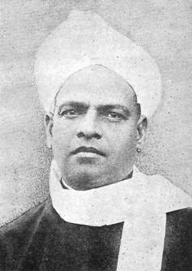

SRINIVASA
SASTRI:
THE
MAN AND HIS MESSAGE
S.
NARAYANASWAMY

Rt. Hon. V. S. Srinivasa Sastri
The
image of a person that passed away twenty-four years ago can become penumbral
and somewhat eroded through the overlay of countless new memories and emotional
experience that pile up in troublous times, such as we
are destined to live in. Happily, the image of Srinivasa Sastri is still
enshrined in my heart, with a sharpness of outline and a magical ever-green
quality that seem to make the passage of time almost an irrelevance. I have
little doubt that the experience of others who knew him just as well, is no
less remarkable. This is perhaps because Srinivasa Sastri stood for values,
attitudes and a respect for human personality that can never become obsolete.
It is correct to admit that the mercurial changes which occur in the affairs of
developing countries like India and the unexpected but nevertheless powerful
currents, which discontent with the current pace and channels of progress
generates among the unhelped majority of the people,
will temporarily cloud or steam-roll the ideas and the approaches of people
like Sastri. But when the intoxications of the moment of political importunity
or of collective frenzy disappear, the rernorseful
hang-over invariably brings the exhortations of men like Sastri into uncanny
focus.
Srinivasa
Sastri was born on 22nd September 1869 in the obscure
Sastri had his schooling in the neighbouring
town of
He
was proud of his first assignment in life as School Master in the
Sastri’s life as a teacher and
professor was not without its small frustrations. On almost every occasion,
these came in the wake of his exercising his unique talents. He pleaded and
practiced, to the extent his superiors permitted, closer communication between
the teacher and the taught by means of extra-curricular exchange
of ideas. He was keenly conscious of the inadequacies of
the hours of humdrum pedagogy, that were largely dissipated in lifeless
text-book reading and notes-writing, in the matter of moulding
adolescent minds and hearts in wholesome ways. But at least one ferule-happy
headmaster had different ideas and told Sastri that he would have none of what
he believed to new-fangled nonsense. At
Sastri
relinquished his headmastership of the
His
intellectual eminence, his deep understanding of intricate Political questions,
his lucid thinking and capacity for handling the written and
spoken word with breath-taking facility, fitted him for a loftier role than
that of a social do-gooder. Very soon his services were availed by the Indian
National Congress and by Dr. Annie Besant for the home Rule Movement of 1919.
The Montagu
Chemsford Reforms proved the signal for Sastri
stepping into more active public life. The much-abused diarchic system introduced
by Montford Reforms and the cleavage of opinion among
the Nationalist leaders as to the usefulness of the proposals, resulted in the
emergence of the two distinct groups, the Liberals as they were called who
accepted the Reforms for their worth and the Congressmen who rejected the
Reforms in toto.
Sastri
believed very sincerely that E. S. Montagu, the then
Secretary of State for
Sastri
had imbibed from Gokhale his lessons on how to conduct oneself in Political
adversity, how to react to the voice of cavil and calumny with patience and
gentleness. Gokhale believed that the whirlgig of
time proved who was right and who was not, and Sastri always remernbered Gokhale’s exhortations in hours of personal
anguish caused by vitriolic press attacks on hirn. He
believed with the poet that “the Mills of God grind slowly but they grind
exceedingly small.”
Sastri’s trips abroad, his
participation in international conferences, the clarity and restraint of his
utterances, the elegance of well-chosen phrases, the Manifest fairness
of his appreciation of opponent’s point of view and his deep insight into human
nature, have all been testified to handsomely by contemporaries
in diverse political camps. His speech at the League of Nations Assembly in
Sastri
in his time was regarded as among two or three Indians who had expert knowledge
of Indians abroad. Little wonder both Lord Irwin and Mahatma Gandhi were agreed
that Sastri should be appointed Agent-General of
His speeches and
writings spread over more than quarter of a century,
cover a wide spectrum of themes ranging from consumer’s co-operation to Valmiki
Ramayana, from citizen’s rights and duties spelt out in his Kamala Lectures, to
picturesque reminiscences of Gokhale and Pherozeshah
Mehta. The solemnity of his utterances was punctuated by humorous sallies and
occasional irony–that
brought out a deep impish streak, which perhaps made the tribulations of his
earlier years endurable. Sastri had more than a personality, in that he had a
presence that radiated charm, calm and a solidity that
Sastri
stood for morals and manners in public life–as in private life. He pleaded for
restraint and forbearance in dealing with provocative situations. He asked for
charity in personal judgment and for a full understanding of human frailties
that were frequently projected into administrative acts. He lived through
bitter controversies without allowing that bitterness to infect him. Personal
rectitude, unselfishness, objectivity and a clear sense of direction were
according to him, basic pre-requisites for successful holding of public office.
I
believe it has been worthwhile to have dwelt for a few minutes on the day of Sastri’s Birth Centenary on all that the great preceptor-statesman
symbolized and stood for, towering amidst tempests of misunderstanding and
political dissent. We, who often complain of the disturbing gulf between our
lofty precepts and not so lofty performances in public life, can recollect with
some upliftment of the heart, that here was a man,
who did not believe in preaching what he did not practise;
and who was in deadly earnest about what he said, what time his political
achievements were perhaps less spectacular than those of several contemporary
public men.
Men
like Sastri are needed and will be born out of coming generations, who will
light the candles and dispel the gloom that gathers time and again in the
corridors of our political edifice. They are the salt of the earth, because
they have the courage and the moral earnestness to be in a minority and are
ready to throwaway the comforts of good living, careers and opportunities, like
old tubes of tooth paste. Let us pray for the emergence of more
such men and women, who will
follow the ennobling example of a life sagaciously and truthfully lived.
(By the kind courtesy
of A. I. R.)